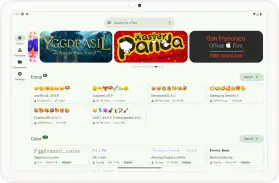

安卓换字体：zFont3 对比实测，这工具到底值不值得装
不 root 改字体这条赛道，系统自带、第三方 App、Magisk 模块三派各有千秋。zFont3 作为老牌选手，跨品牌兼容和多文件接入方案是它的核心竞争力。
安卓生态的碎片化不是什么新鲜事，但换到改字体这个场景里，它就变成了一个实打实的痛点——三星有 Galaxy Themes，OPPO 有 ColorOS 主题商店，vivo、小米、华为各自一套，每家的主题引擎逻辑都不一样。你想换个喜欢的字体，要么乖乖去官方主题商店里挑（选择有限还常收费），要么就得折腾 Magisk 模块甚至 root。
zFont3 就是在这种格局下活了快十年的一个异类。它的zFont3官网上列着完整的支持机型表，从 Android 4.4 KitKat 一路覆盖到 Android 16，不靠 root 也不用 Magisk（当然也支持），单靠 App 本身就能在各家品牌机上把自定义字体塞进系统。我用过 Ifont、爱字体、Magisk 的可换字体模块，也老老实实排过系统主题商店的队，zFont3 是唯一让我在换过三家品牌后还留在手机里的那个。
它解决了什么问题
同类工具大致分三条路：系统自带的主题商店（最省心但限制多）、第三方字体 App（选择多但容易被系统拦截）、Magisk/KernelSU 模块（最彻底但门槛最高）。zFont3 走的是中间路线——无 root、跨品牌、多种文件接入，把原本散落在不同工具里的能力整合进了一个 App。
跨品牌兼容是真的能打
这不是广告词。zFont3 官方声称支持的机型列表覆盖三星 Galaxy S/Note/A/M 全系列、OPPO/realme、vivo、小米/红米、华为/荣耀（含 HarmonyOS），甚至一加、摩托罗拉这些相对小众的品牌也在名单里。从 Android 4.4 到最新的 OneUI 8（Android 16），十年跨度的系统版本都有测试覆盖。
实际体验下来，三星 OneUI 是兼容最好的平台——从 Android 10 到 16 几乎没什么特殊门槛，文件接入选 Shizuku 一路绿灯，Apply 完重启一下就生效。OPPO 和 vivo 各有各的脾气：OPPO Android 10+ 需要把系统地区切到缅甸绕过主题引擎限制；vivo Android 13+ 要么降级主题 App 要么用文件管理器法曲线救国。小米 HyperOS 近几年兼容性提升明显，但早期版本偶尔会出现字体选择器崩溃的问题。HarmonyOS 上要注意中文字体必须包含 CJK 字形，纯英文字体不会替换中文界面。
三种文件接入方式，总有一种能成
zFont3 最聪明的设计可能就是它的文件接入方案了。Google 从 Android 11 开始收紧存储权限，之前通用的 SAF 框架在 Android 13+ 大面积失效——厂商把主题目录标记为受保护路径，SAF 根本拿不到权限。zFont3 没有死磕 SAF，而是同步引入了 Shizuku、zFile，加上老派的 Root 方案，用户可以按自己的条件选最合适的路径。
| 接入方式 | 适用场景 | 推荐度 |
|---|---|---|
| Shizuku | Android 13+ 主流方案，需无线调试授权 | ⭐⭐⭐⭐⭐ |
| SAF | Android 11-12 可试，13+ 基本废了 | ⭐⭐ |
| Root | 最彻底，适合已经 root 的用户 | ⭐⭐⭐⭐ |
| zFile | HarmonyOS 备选方案 | ⭐⭐⭐ |
安装包从官方下载拿最新版就行。官方现在主推 Shizuku，配一次之后基本不用管了，系统更新也不太影响。SAF 偶尔在老机型上能成，但经常被厂商 ROM 自动回收权限，不太靠谱。如果你已经 root，那文件接入反而是最省心的，直接走 Root 通道不用折腾。
进阶玩家还能创建模块
这一点可能是很多人忽略的。zFont3 不只是个字体切换器，它内置了模块创建功能——可以把字体打包成 Magisk、KernelSU 或 APatch 模块，直接刷机级替换。对玩机党来说，这比在 App 里点 Apply 更彻底，系统 OTA 之后字体也不会被还原。模块创建的操作界面也挺直观，选好字体包和模块类型，一键生成就行。

它的代价
说它全能也不准确。为了跨品牌兼容和无 root 方案，zFont3 付出了一些代价，这些你得提前知道。
Android 13+ 必须配 Shizuku，有门槛
Shizuku 需要先开开发者选项里的无线调试，再扫码配对或者手动输入配对码。整个过程不算复杂，但对完全没接触过的新手来说，第一次看可能会懵。而且 Android 14 之后 Google 又改了配对流程，需要用 ADB 或者开发者工具来授权。如果不想碰这些，那 Android 13+ 上你可能真的用不了 zFont3——SAF 这条路基本走不通了。
部分品牌有硬限制，不是一台就能成
OPPO 切缅甸地区那个操作，至今还是很多人第一次用时的最大障碍。vivo 降级主题 App 也是个反直觉的操作——你得把系统自带的主题商店 App 降到旧版本才能绕开它的字体锁定。这些不是 zFont3 的问题，是厂商在主题引擎里埋的防御逻辑，但你在用之前得有心理准备，不是装完就能直接换。
字体生效不稳定，重启有时候是必须的
很多品牌的主题引擎 Apply 字体之后不会立刻刷新界面。zFont3 的文档里列的排查步骤很详细：先切桌面左右滑几屏强制刷新 Launcher → 打开主题商店随便切个主题再切回来 → 万不得已重启手机。三星上重启一次 90% 能解决，但 vivo 和部分小米机型可能得反复来。这不是 zFont3 的 bug，是主题引擎本身的刷新机制就这么设计的。
选它还是选别的
说了这么多，什么时候该选 zFont3？
- 你手上有不止一台不同品牌的安卓机：zFont3 的跨品牌兼容是同类工具里最好的，一套流程走下来换设备不用重新摸索。
- 你不想 root 但也不想被系统主题商店的选择困住：如果你已经觉得官方主题商店里的字体挑来挑去就那几个样，zFont3 导入自定义字体的能力正好满足你。
- 你以后可能会玩 Magisk/KernelSU：zFont3 的模块创建功能和它的 App 内 Apply 是两条独立的路，先用 App 体验，想玩深了再转模块。
什么时候不建议选？
- 你只用一台三星/OPPO/vivo 的机器，而且主题商店里的字体你还能接受——那乖乖用系统自带就行，少折腾。
- 你完全不想碰无线调试、Shizuku 这些东西——zFont3 在 Android 13+ 上的门槛确实比第三方字体 App 高不少。
- 你已经 root 了而且只需要最基础的字体替换——Magisk 模块可能更省心。
写在最后
zFont3 在安卓换字体这个赛道里不是最年轻的，但可能是最不挑平台的那一个。系统自带的主题商店最省心但选择有限，第三方字体 App 选择多但容易被系统拦截，Magisk 模块最彻底但门槛高。zFont3 卡在中间，用了十年迭代把跨品牌兼容做到了几乎无对手，同时提供了 Shizuku、SAF、Root 多种文件接入方案让你总有一条路能成。
推荐给所有觉得系统主题商店字体不够用、又不想 root 的安卓用户——装起来可能比 Ifont 多花十分钟配 Shizuku，但配好之后的体验确实稳得多。